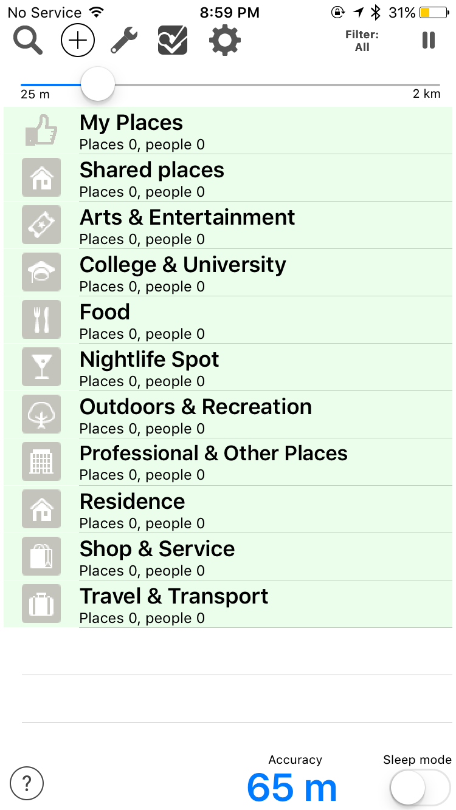

Project One :
LONG STORY SHORT
This mobile media project calls to consider a mobile first approach to the challenge of creating a navigation platform for the visually impaired. The task is to respond to the current system of beacon technology, and conceptualize a production of mobile media that makes use of the technology for the purpose of contributing to a non-visual interaction tool.
Objective: consider the limits and opportunities of a platform that does not rely on visual reception of information.
I plan to build upon BlindSquare’s current app concept, which is an accessible GPS-app developed for the blind and visually impaired. BlindSquare provides a lot of useful information, describing the environment, announcing points of interest and street intersections as a user travels. However, in having so much content to account for the information of one’s surroundings, the app can quickly become confusing, or overwhelming to use — especially if one can’t see how to navigate it all.



MinimalSee, Sound Interface App.
For this project, I propose to restructure the service provided by BlindSquare, in a way that can become more personalized and simpler to navigate for users.
I plan to explore the value of auditory communication, rather than visual, and look into ways of better utilizing the opportunities it provides, especially in relation to location awareness.
My first area of exploration is in building a greater consistency between verbal communication and physical interaction, which will be constructed visually, despite intended use for a non-visual audience.
What is a small scale indication of “looking around”? Format based on clock cues.
Sounds can represent places and concepts, not just verbal explanations.
Varied amount of information provided, depending on location.
More information is provided upon entrance into sub-categories. The map can be implemented as a subset of each category, allowing users to explore it with more specific preferences in mind.
The second aspect of my concept intends to create an environment for both collaboration with others and individual personalization. Using data from existing beacon implementation, I plan to offer information about businesses and nearby services, with which users can affirm or contribute feedback. They may also select from options which might be of most interest to them, so that the information provided to them is most relevant to personal goals.
Though this concept, I also hope to address the topic of different-ability, rather than “disability”. While users may be visually impaired, I do not want to pretend to offer assistance, as users are already entirely capable of navigating the world on their own. Rather, I would like to explore other aspects of ability, and see where interactions may have the opportunity to be enhanced.